приглашаем
на экскурсии
на экскурсии
Endemic Mountain Brewery — ремесленная пивоварня расположенная в экологически чистом уголке Большого Сочи — горном селе Медовеевка. Мы варим уникальное местное пиво на воде из горного родника, оглядываясь на культуру своего региона и его гастрономическое разнообразие


 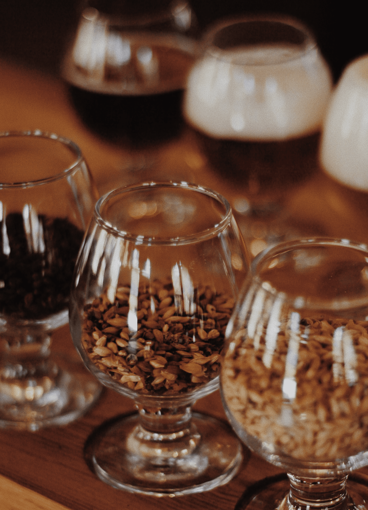
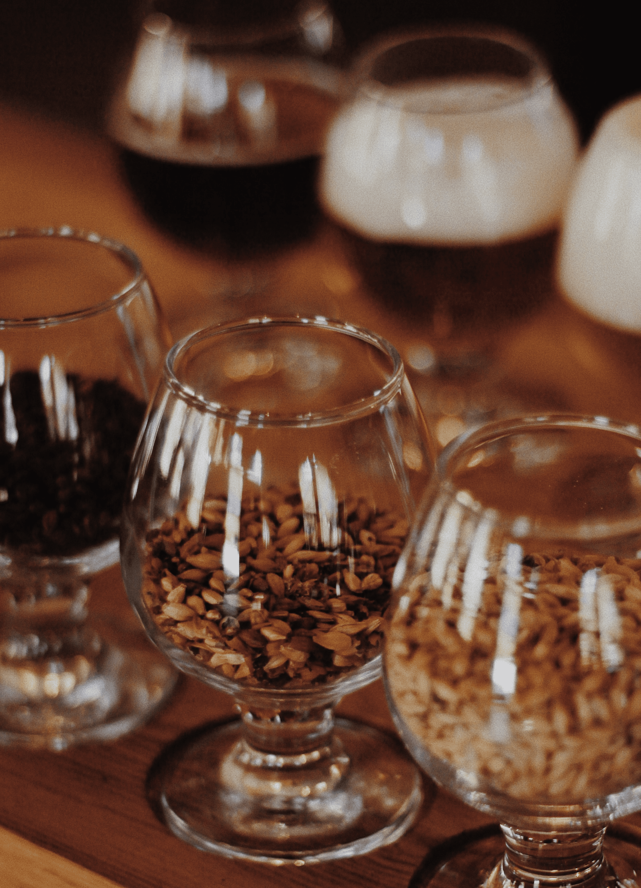
 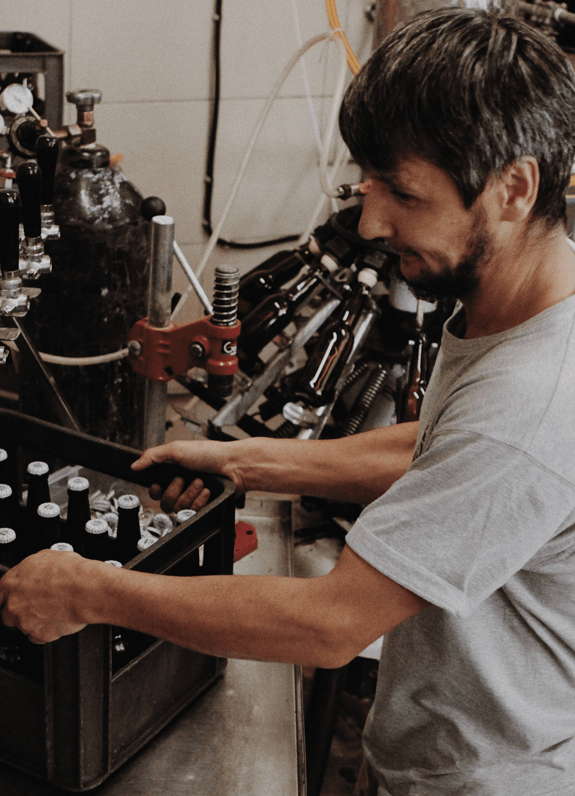
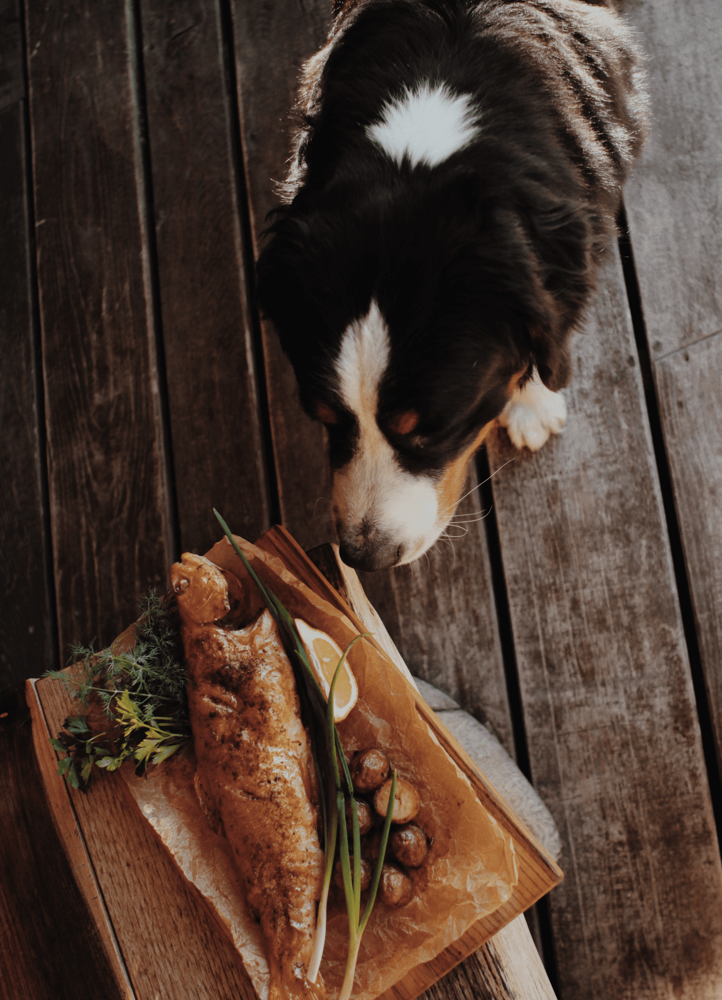
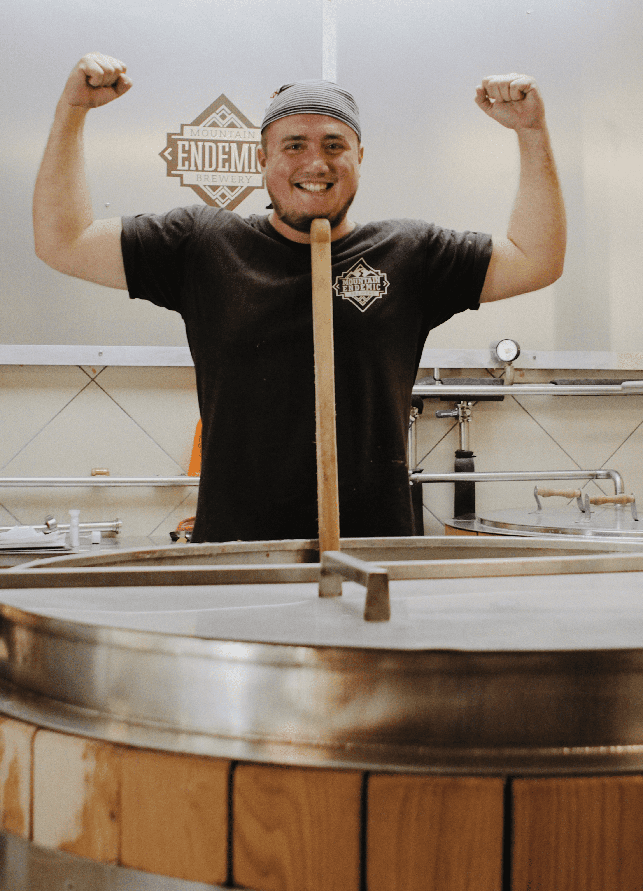
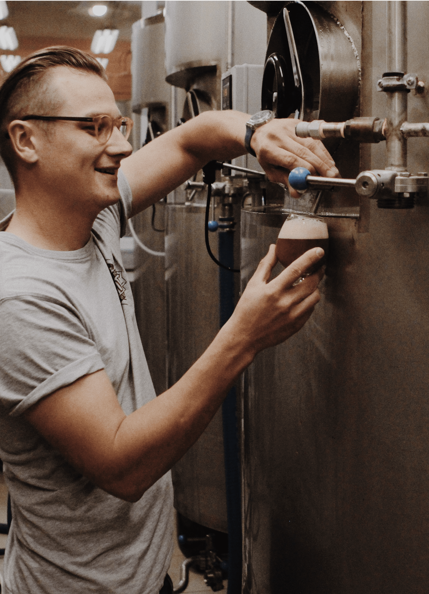
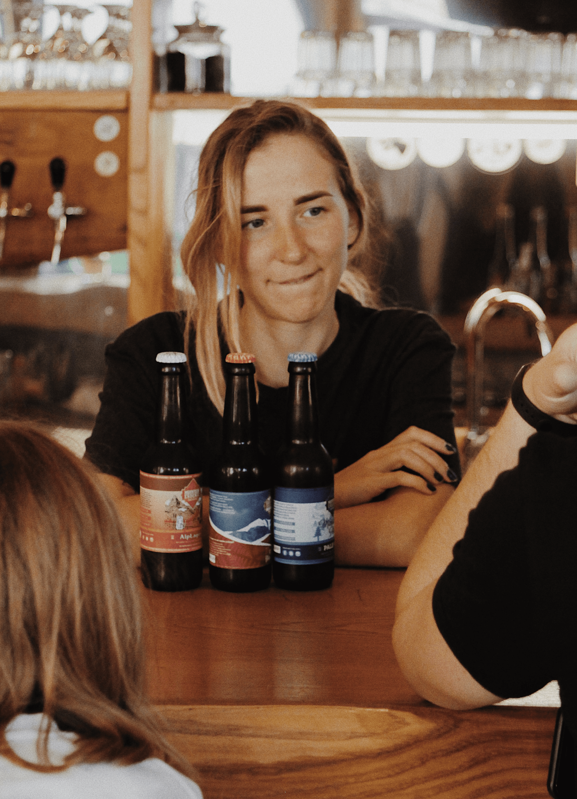
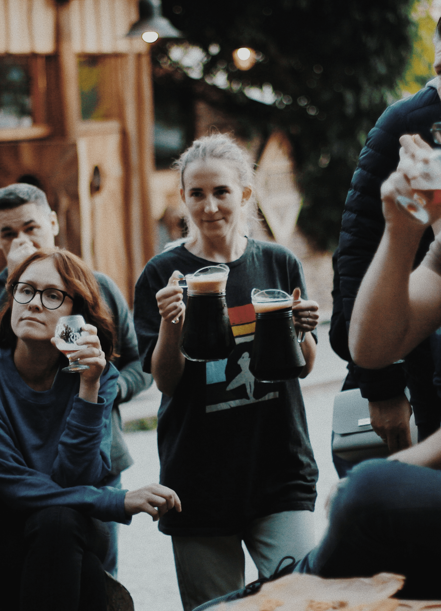
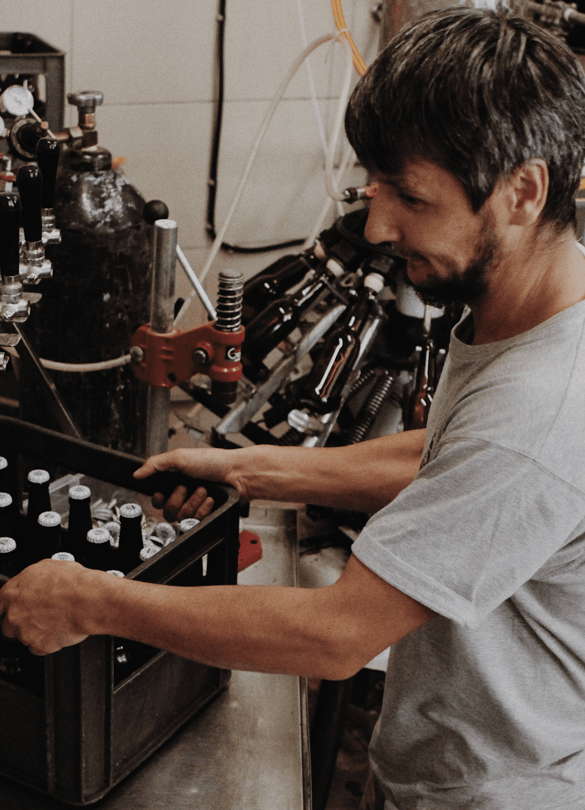
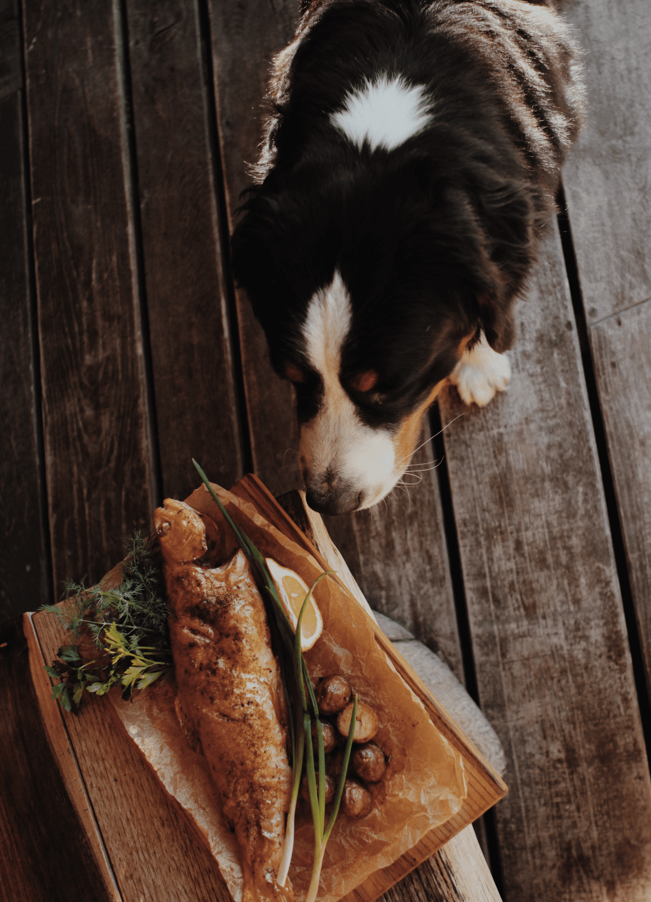
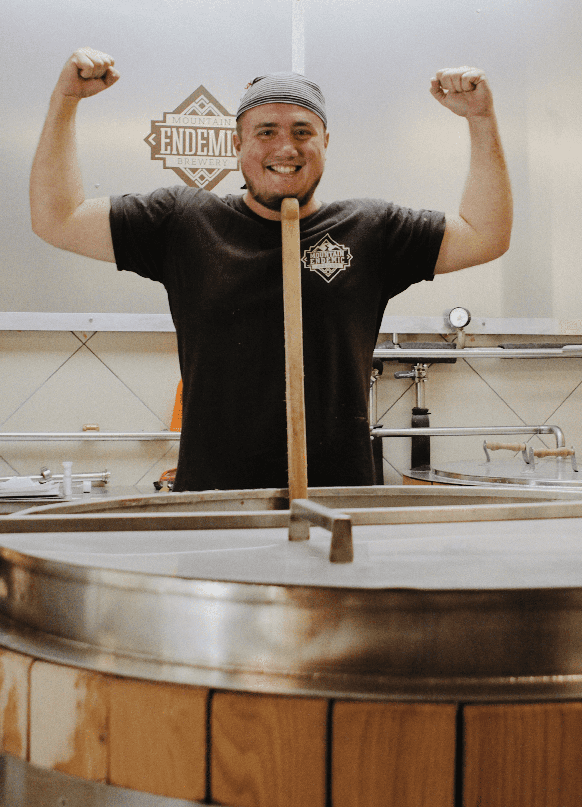
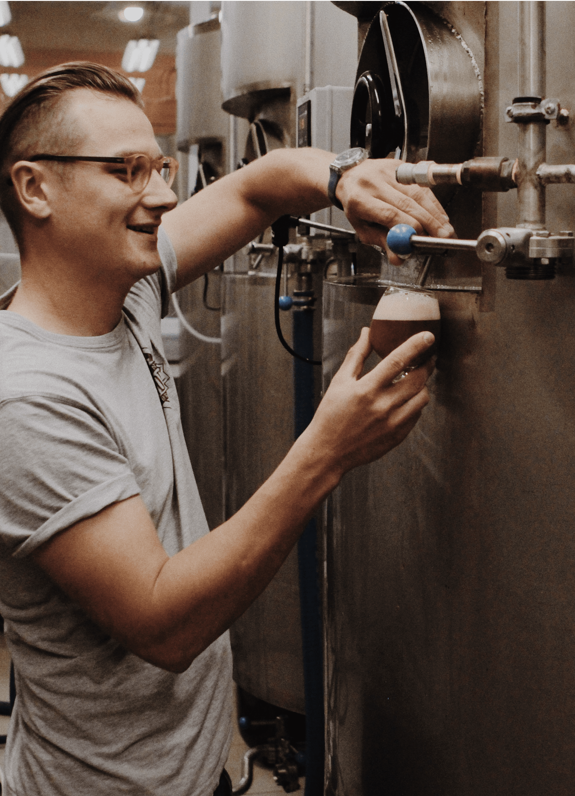
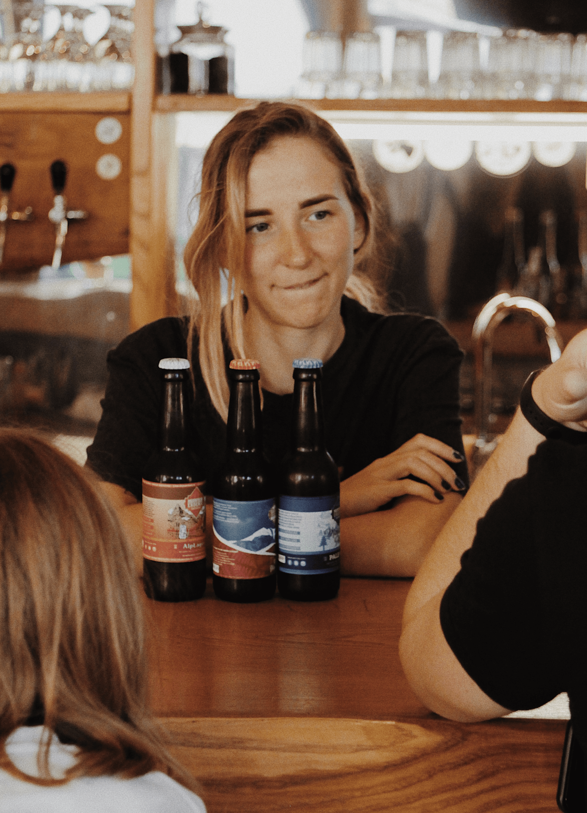
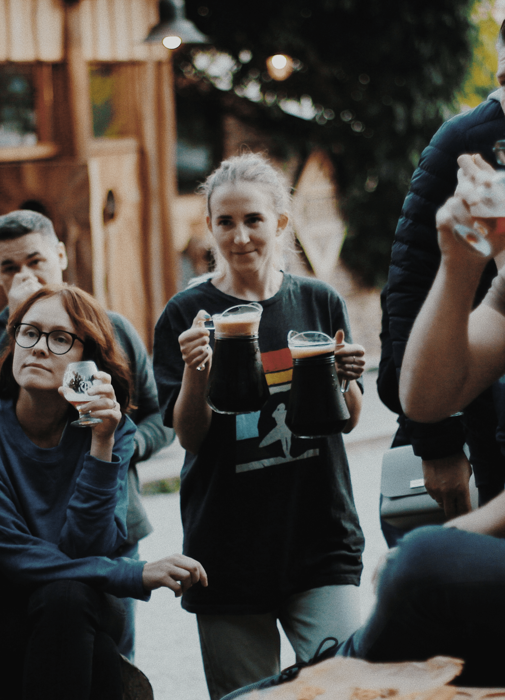